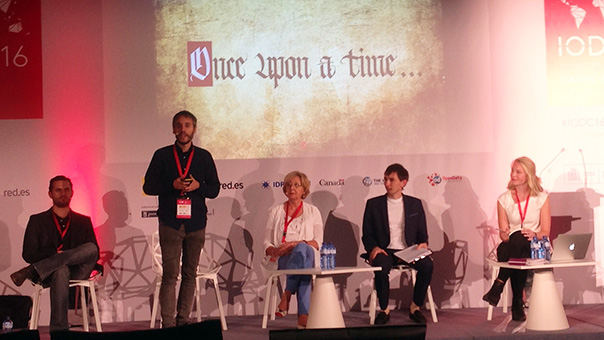

Reflections from the International Open Data Conference: open data has grown up
On the final day of IODC, Anna Scott reports on what was covered at the conference, and reflects on a shift from starry-eyed evangelism to reflective and forward-thinking analysis
 Members of the Open Data Leaders Network updating IODC delegates in a session on Friday. Image by Fiona Smith
As a political, cultural and technical movement, I think it’s fair to say that open data is reaching its adolescence.
In its younger years, it was driven, primarily, by starry-eyed advocates. They were evangelical. They were excited. They were keen to save the world and believed they could.
But as open data gains traction in governments, civil society and businesses globally, its pioneers are shifting their focus from its blue-sky potential to its challenges and its limits. And this is exactly what we need to drive the movement forward.
As international leaders and experts gathered this week for the fourth International Open Data Conference in Madrid, the tone of the sessions and conversations I witnessed was reflective and forward-thinking.
In an opening session, Javier Hernaja of the European Commission reiterated the EU’s commitment to open data, reflecting on the momentum that’s grown since the Reuse of Public Sector Information Directive in 2003. As a brand new policy area, many then were doubtful of the concept of, let alone need for, ‘data reuse’. We have come a long way since then, Hernaja stressed, and we should take stock of our successes; but we must also focus on engaging different municipalities and user communities to drive the movement forward.
This sentiment around the need to build bridges has been shared by many others at the conference. Whether to reach new user groups, new communities or doubtful politicians to engage with open data, it’s clear that transcending our ‘open data bubble’ is a priority for many.
“To make open data available to access, use and share, we need its policies to resonate with the needs and demands of our civic and social constituencies,” Ania Calderon, Director General of Datos.gob.mx, stressed in one of the opening sessions. “Engaged citizens are government’s best ally,” Calderon went on to add, as governments alone won’t solve great challenges such as climate change. Open data offers grounds for collaboration. “Rather than seeing open data as an end-goal, we must see it as a global good. We must apply it to create new spaces where governments can engage with non-state actors and thrive in a new era.”
In discussing the need for stronger data infrastructure, our CEO Jeni Tennison reiterated the role of those outside of governments. “We must recognise that a lot of data infrastructure is produced by civil society and private businesses, not just governments. We must make an economic case about why that data should be open and available to everyone.”
That is not to say that government progress has not been celebrated, and rightly so. At one of yesterday’s closing sessions, chaired by our board member Martin Tisne, it was announced that Ukraine, Costa Rica, Paraguay and Sierra Leone had adopted the Open Data Charter, bringing the number of adopter governments to 39. In the same session, the Organisation for Economic Cooperation and Development’s Edwin Lau stressed the charter’s importance for driving progress: “The OECD has committed to data-driven public administration, but what does that mean? The Open Data Charter helps make it more concrete.”
We also heard updates from members of our Open Data Leaders Network: Enrique Zapata from Mexico’s National Digital Strategy, Marija Kujacic from the Serbian Directorate for e-Government, Jose Subero from the ICT Department in the Government of Aragon, and Alexey Vyskub from the Agency for e-Governance of Ukraine. All the panelists shared recent successes – including better engagement with users and focusing on bringing new networks – but underscored how important the charter will be in the coming years.
Confidence is what drives us to persevere but self-awareness is ultimately what hones us, as people generally, but also as open data advocates. It’s encouraging to see experts tackling real challenges and understanding what wider people and processes we need to compliment open data initiatives.
If you have ideas or experience in open data that you'd like to share, pitch us a blog or tweet us at @ODIHQ.